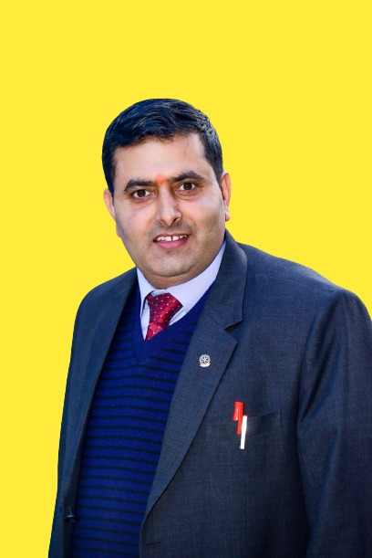

Ghanshyam Nyoupane
Chairman
Ghanshyam Nyoupane: A passionate agronomist with over 42 years of experience in sustainable
farming practices. He leads our research and development team.

Krrish Nyoupane
Web developer
Krrish Nyoupane: Experienced web developer skilled in crafting dynamic and user-friendly websites.